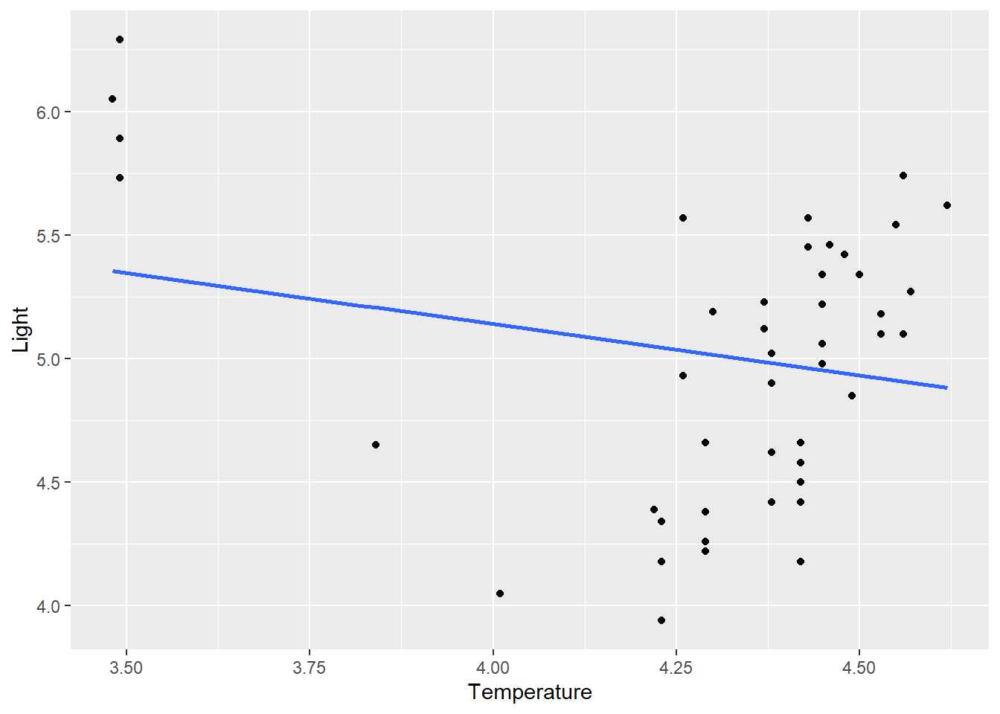
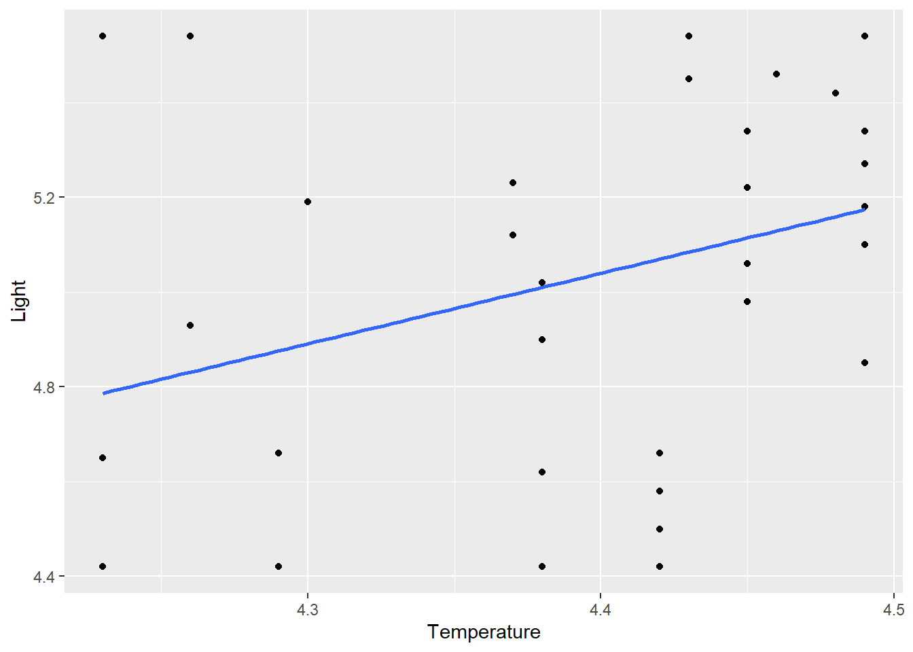
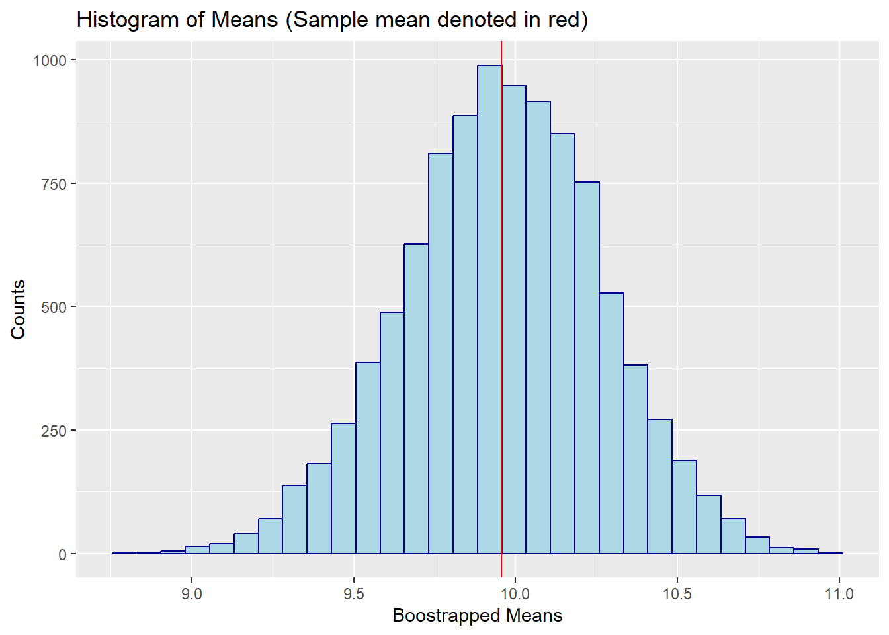
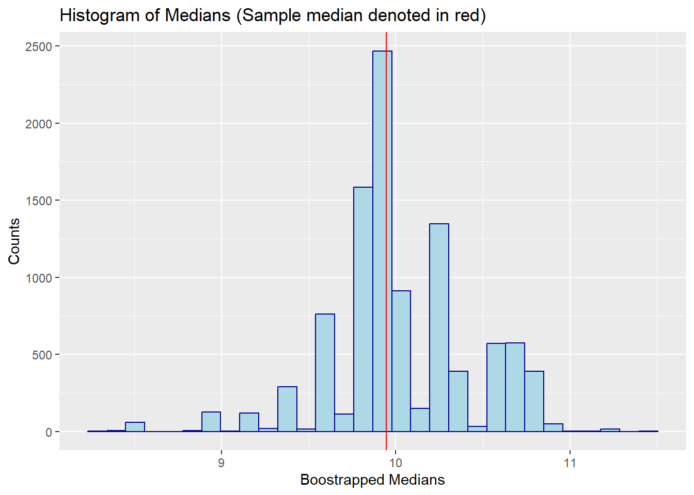
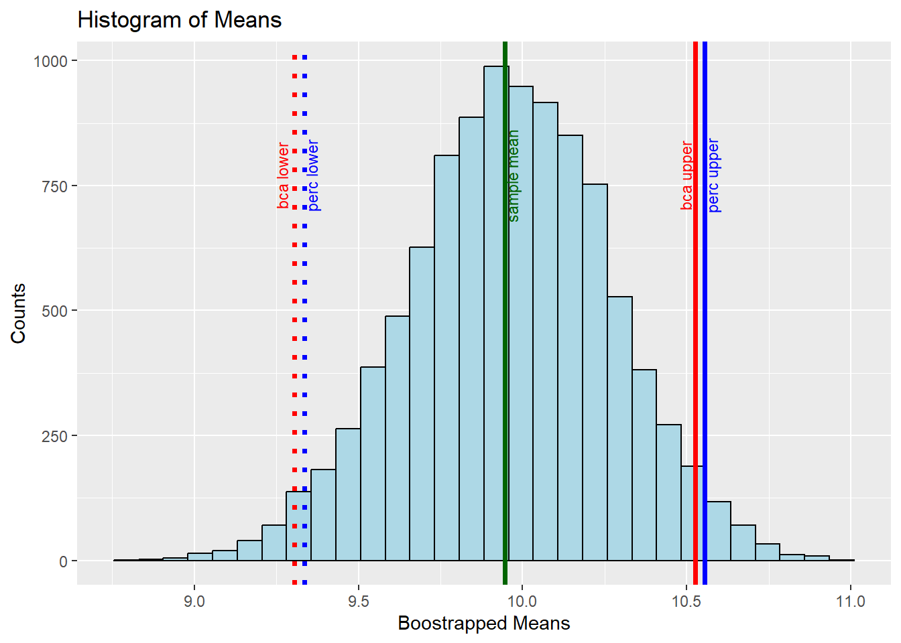
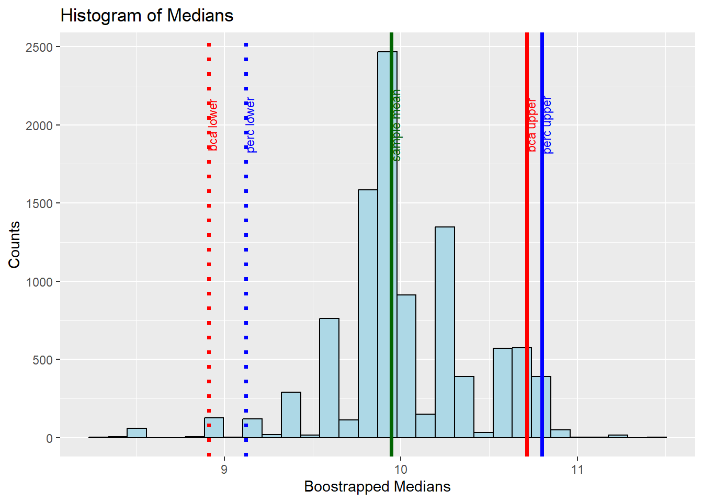
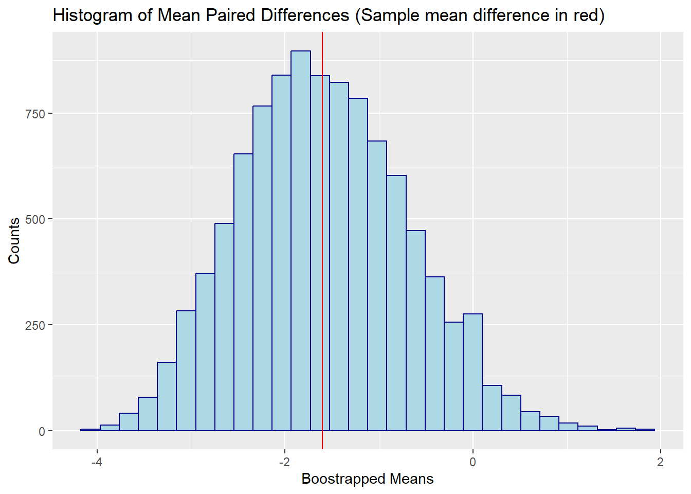
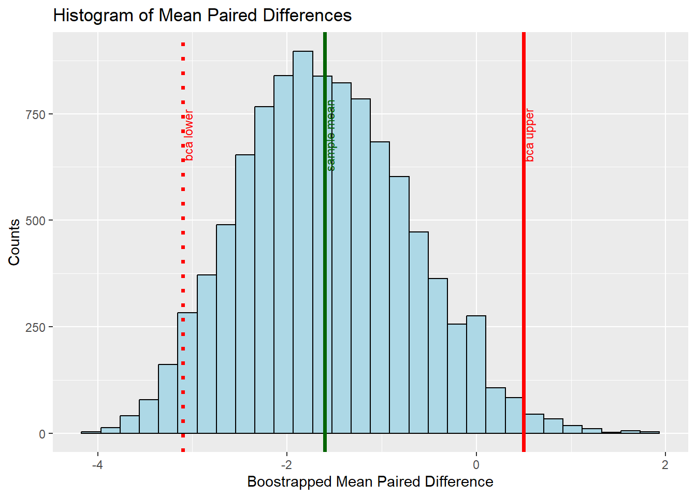
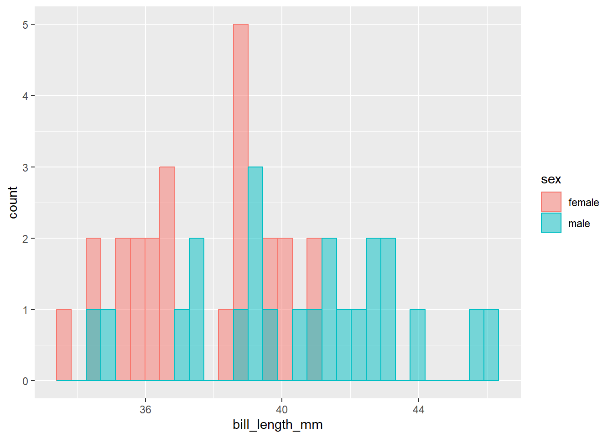
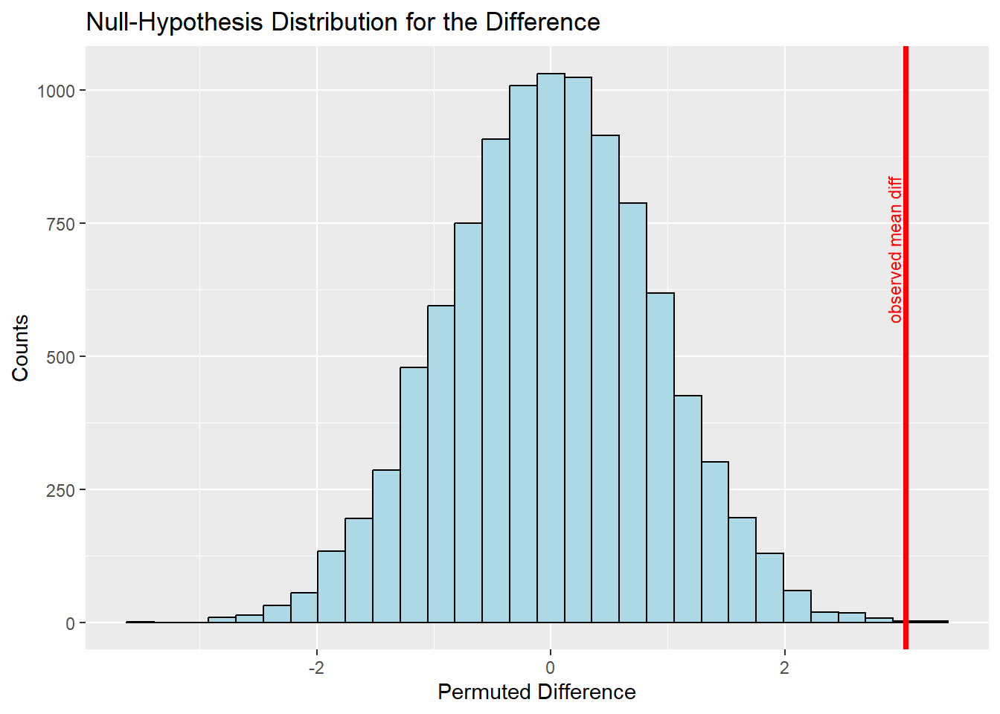

If you are fitting a model, display the model output in a neatly formatted table. (The gttidy and kable functions can help!)
If you are creating a plot, use ggplot or baseand make sure they are publication ready. That means there are clear labels for all axes, titles, etc.
Commit and push your work to GitHub regularly, at least after each exercise. Write short and informative commit messages.
When you’re done, we should be able to knit the final version of the QMD in your GitHub as a HTML.
Code
library(tidyverse)library(robustbase) # star datalibrary(boot) # bootstrappinglibrary(correlation) # get different correlationslibrary(permuco) # run permutation testslibrary(parameters) # SElibrary(data.table) # fread library(infer) # sample_rep_n functionlibrary(palmerpenguins) # penguins datasetlibrary(performance)
Robust Correlations
Use the stars data in robustbase. This data looks at the relationship between temperature at the surface of a star and the light intensity.
Code
stars<-robustbase::starsCYG
a. Plot the data and describe the pattern seen. What is Pearson’s r?
Code
ggplot(stars, aes(x = log.Te, y = log.light)) +geom_point() +geom_smooth(method ="lm", se =FALSE) +labs(x ="Temperature", y ="Light")

Code
pear_r <-cor(stars$log.Te,stars$log.light)
The Pearson correlation is r = pear_r
b. Re-run the correlation, but this time use the winsorized r (20%). Do this manually and then with the correlation::correlation function from easystats.
The winsorized r (20%) obtained manually is 0.3444762 which matches that obtained using the correlation::correlation function ().
By winsorizing the data, the correlation is now positive since the influential outliers have been removed.
Below is a plot of the winsorized data:
Code
ggplot(stars_win, aes(x = win_temp, y = win_light)) +geom_point() +geom_smooth(method ="lm", se =FALSE) +labs(x ="Temperature", y ="Light")

Bootstrapping and Permutations
For the following data: [8.453532, 10.025041, 11.495339, 9.367600, 8.333229, 9.788753, 10.883344, 10.543059, 9.869095, 10.799819]
a. Bootstrap the mean (using the boot package) and plot the histogram with ggplot2
Code
mean_func <-function(vector,indices){return(mean(vector[indices]))}data <-c(8.453532, 10.025041, 11.495339, 9.367600, 8.333229, 9.788753, 10.883344, 10.543059, 9.869095, 10.799819)results <-boot(data=data, statistic=mean_func, R=10000)samp_mean <-mean(data)df <-data.frame(results$t)ggplot(df, aes(x=results.t))+geom_histogram(color="darkblue", fill="lightblue") +geom_vline(xintercept = samp_mean, color ="red")+ggtitle("Histogram of Means (Sample mean denoted in red)")+labs(x ="Boostrapped Means", y ="Counts")

b\. Bootstrap the median (using the `boot` package) and plot the histogram with `ggplot2`
Code
med_func <-function(vector,indices){return(median(vector[indices]))}data <-c(8.453532, 10.025041, 11.495339, 9.367600, 8.333229, 9.788753, 10.883344, 10.543059, 9.869095, 10.799819)results_med <-boot(data=data, statistic=med_func, R=10000)sample_med <-median(data)df <-data.frame(results_med$t)ggplot(df, aes(x=results_med.t))+geom_histogram(color="darkblue", fill="lightblue") +geom_vline(xintercept = sample_med, color ="red")+ggtitle("Histogram of Medians (Sample median denoted in red)")+labs(x ="Boostrapped Medians", y ="Counts")

c\. For the mean bootstraps, plot the 95% confidence intervals (percentile and bca) ) along with the mean. Use `geom_vline annotate` to mark the lines noting what they represent.
Code
mean_perc_ci <-boot.ci(results, type ="perc", R=10000, conf =0.95)mean_bca_ci <-boot.ci(results, type ="bca", R=10000, conf =0.95)perc_ci <-c(mean_perc_ci$percent[4], mean_perc_ci$percent[5])bca_ci <-c(mean_bca_ci$bca[4], mean_bca_ci$bca[5])df <-data.frame(results$t)ggplot(df, aes(x=results.t))+geom_histogram(color="black", fill="lightblue") +geom_vline(xintercept = sample_med, color ="darkgreen", size =1.25)+annotate("text", x=sample_med+0.02, y=770, label ="sample mean", angle =90, size =3, color ="darkgreen")+geom_vline(xintercept = bca_ci[1], color ="red", size =1.25, linetype ="dotted" )+annotate("text", x=bca_ci[1]-0.04, y=770, label ="bca lower", angle =90, size =3, color ="red")+geom_vline(xintercept = bca_ci[2], color ="red", size =1.25)+annotate("text", x=bca_ci[2]-0.03, y=770 , label ="bca upper", angle =90, size =3, color ="red")+geom_vline(xintercept = perc_ci[1], color ="blue", size =1.25, linetype ="dotted" )+annotate("text", x=perc_ci[1]+0.02, y=770, label ="perc lower", angle =90, size =3, color ="blue")+geom_vline(xintercept = perc_ci[2], color ="blue", size =1.25)+annotate("text", x=perc_ci[2]+0.02, y=770, label ="perc upper", angle =90, size =3, color ="blue")+ggtitle("Histogram of Means")+labs(x ="Boostrapped Means", y ="Counts")
Warning: Using `size` aesthetic for lines was deprecated in ggplot2 3.4.0.
i Please use `linewidth` instead.

d\. For the median bootstraps, plot the 95% confidence intervals (Percentile and BCa). Use `geom_vline and annotate` to mark the lines noting what they represent.
Code
med_perc_ci <-boot.ci(results_med, type ="perc", R=10000, conf =0.95)med_bca_ci <-boot.ci(results_med, type ="bca", R=10000, conf =0.95)perc_ci <-c(med_perc_ci$percent[4], med_perc_ci$percent[5])bca_ci <-c(med_bca_ci$bca[4], med_bca_ci$bca[5])df <-data.frame(results_med$t)ggplot(df, aes(x=results_med.t))+geom_histogram(color="black", fill="lightblue") +geom_vline(xintercept = sample_med, color ="darkgreen", size =1.25)+annotate("text", x=sample_med+0.02, y=2000, label ="sample mean", angle =90, size =3, color ="darkgreen")+geom_vline(xintercept = bca_ci[1], color ="red", size =1.25, linetype ="dotted" )+annotate("text", x=bca_ci[1]+0.02, y=2000, label ="bca lower", angle =90, size =3, color ="red")+geom_vline(xintercept = bca_ci[2], color ="red", size =1.25)+annotate("text", x=bca_ci[2]+0.02, y=2000, label ="bca upper", angle =90, size =3, color ="red")+geom_vline(xintercept = perc_ci[1], color ="blue", size =1.25, linetype ="dotted" )+annotate("text", x=perc_ci[1]+0.02, y=2000, label ="perc lower", angle =90, size =3, color ="blue")+geom_vline(xintercept = perc_ci[2], color ="blue", size =1.25)+annotate("text", x=perc_ci[2]+0.02, y=2000, label ="perc upper", angle =90, size =3, color ="blue")+ggtitle("Histogram of Medians")+labs(x ="Boostrapped Medians", y ="Counts")

You want to test whether the following paired samples are significantly different from one another: pre = [22,25,17,24,16,29,20,23,19,20], post = [18,21,16,22,19,24,17,21,23,18]. Often researchers would run a paired sampled t-test, but you are concerned the data does not follow a normal distribution.
Calculate the paired differences, that is post - pre, which will result in a vector of paired differences (pdiff0 = post - pre)
Code
pre <-c(22,25,17,24,16,29,20,23,19,20)post <-c(18,21,16,22,19,24,17,21,23,18)dif <- post - predif
[1] -4 -4 -1 -2 3 -5 -3 -2 4 -2
b\. Calculate the mean of the paired differences (Xpdiff0)
Code
mean_dif <-mean(dif)mean_dif
[1] -1.6
d\. Bootstrap b) with replacement (pdiff1) and plot the histogram with `ggplot2`.
Code
mean_func <-function(vector,indices){return(mean(vector[indices]))}data <- difset.seed(0)results <-boot(data=data, statistic=mean_func, R=10000)samp_mean <-mean(data)df <-data.frame(results$t)ggplot(df, aes(x=results.t))+geom_histogram(color="darkblue", fill="lightblue") +geom_vline(xintercept = samp_mean, color ="red")+ggtitle("Histogram of Mean Paired Differences (Sample mean difference in red)")+labs(x ="Boostrapped Means", y ="Counts")

e\. Calculate the 95% confidence intervals (BCa). What can you infer from this?
Code
dif_bca_ci <-boot.ci(results, type ="bca", R=10000, conf =0.95)bca_ci <-c(dif_bca_ci$bca[4], dif_bca_ci$bca[5])
The 95% confidence interval is -3.1 to 0.5. Because this interval includes 0, we fail to reject the null hypothesis: there is no significant evidence that the paired samples are significantly different from one another.
f\. Plot bootstrap mean along with 95% CIs (with `ggplot2`). Use annotate to note what the vertical lines represent.
Code
df <-data.frame(results$t)ggplot(df, aes(x=results.t))+geom_histogram(color="black", fill="lightblue") +geom_vline(xintercept = samp_mean, color ="darkgreen", size =1.25)+annotate("text", x=samp_mean+0.05, y=700, label ="sample mean", angle =90, size =3, color ="darkgreen")+geom_vline(xintercept = bca_ci[1], color ="red", size =1.25, linetype ="dotted" )+annotate("text", x=bca_ci[1]+0.05, y=700, label ="bca lower", angle =90, size =3, color ="red")+geom_vline(xintercept = bca_ci[2], color ="red", size =1.25)+annotate("text", x=bca_ci[2]+0.05, y=700, label ="bca upper", angle =90, size =3, color ="red")+ggtitle("Histogram of Mean Paired Differences")+labs(x ="Boostrapped Mean Paired Difference", y ="Counts")

Pepper Joe measured the length and heat of 85 chili peppers. He wants to know if smaller peppers are hotter than longer peppers.
Code
#read data.table to read inchili<-read.delim("https://raw.githubusercontent.com/jgeller112/psy504-advanced-stats/main/slides/03-Robust_Methods/data/chillis.csv")
Some species display sexual size dimorphism – in which one sex is on average larger than the other. Such a pattern can tell us about the species’ ecology and mating habits. Do penguins display this sex difference in size? Let’s just look at a subset of the palmerpenguins data set, which we’ll call my_penguins.
Code
my_penguins <- penguins %>%filter(species =="Adelie",!is.na(sex), island =="Torgersen") my_penguins
# A tibble: 47 x 8
species island bill_length_mm bill_depth_mm flipper_~1 body_~2 sex year
<fct> <fct> <dbl> <dbl> <int> <int> <fct> <int>
1 Adelie Torgersen 39.1 18.7 181 3750 male 2007
2 Adelie Torgersen 39.5 17.4 186 3800 fema~ 2007
3 Adelie Torgersen 40.3 18 195 3250 fema~ 2007
4 Adelie Torgersen 36.7 19.3 193 3450 fema~ 2007
5 Adelie Torgersen 39.3 20.6 190 3650 male 2007
6 Adelie Torgersen 38.9 17.8 181 3625 fema~ 2007
7 Adelie Torgersen 39.2 19.6 195 4675 male 2007
8 Adelie Torgersen 41.1 17.6 182 3200 fema~ 2007
9 Adelie Torgersen 38.6 21.2 191 3800 male 2007
10 Adelie Torgersen 34.6 21.1 198 4400 male 2007
# ... with 37 more rows, and abbreviated variable names 1: flipper_length_mm,
# 2: body_mass_g
a. Visualize body size by sex
Code
ggplot(my_penguins, aes(x=bill_length_mm, color = sex, fill = sex))+geom_histogram(data = my_penguins, alpha=0.5, position="identity")

b. Calculate the original mean difference between sex
The original mean difference (male - female) in bill length is 3.0327899 mm.
c. Permute the group labels (10000x)
Code
sample_size <-nrow(my_penguins) # length of datasetperm_reps <-10000# number of permutations you want to domany.perm <- my_penguins %>%# this function is in the infer package. What it is doing is creating rep_sample_n(size = sample_size, replace =FALSE, reps = perm_reps) %>%mutate(perm_treatment =sample(sex, size =n(), replace =FALSE)) %>%group_by(replicate, perm_treatment)head(many.perm)
# A tibble: 6 x 10
# Groups: replicate, perm_treatment [2]
replicate species island bill_~1 bill_~2 flipp~3 body_~4 sex year perm_~5
<int> <fct> <fct> <dbl> <dbl> <int> <int> <fct> <int> <fct>
1 1 Adelie Torgers~ 38.5 17.9 190 3325 fema~ 2009 female
2 1 Adelie Torgers~ 41.8 19.4 198 4450 male 2008 male
3 1 Adelie Torgers~ 41.5 18.3 195 4300 male 2009 male
4 1 Adelie Torgers~ 38.9 17.8 181 3625 fema~ 2007 male
5 1 Adelie Torgers~ 37.3 20.5 199 3775 male 2009 female
6 1 Adelie Torgers~ 43.1 19.2 197 3500 male 2009 male
# ... with abbreviated variable names 1: bill_length_mm, 2: bill_depth_mm,
# 3: flipper_length_mm, 4: body_mass_g, 5: perm_treatment
d. Plot the null-hypothesis distribution (NHD) for the difference
Code
my_penguins_diff <- my_penguins %>%specify(bill_length_mm~sex) %>%calculate(stat ="diff in means", order =c("male", "female"))null_dist <- my_penguins %>%specify(bill_length_mm~sex) %>%hypothesize(null ="independence") %>%generate(reps =10000, type ="permute") %>%calculate(stat ="diff in means", order =c("male", "female"))ggplot(null_dist, aes(x=stat))+geom_histogram(color="black", fill="lightblue") +geom_vline(xintercept = mean_dif, color ="red", size =1.25)+annotate("text", x=mean_dif-0.1, y=700, label ="observed mean diff", angle =90, size =3, color ="red")+ggtitle("Null-Hypothesis Distribution for the Difference")+labs(x ="Permuted Difference", y ="Counts")

e. Compare the observed mean difference to the NHD (is p < .05?)
Looking at the histogram, the observed mean difference is highly unlikely to come from the null distribution.
Calculating the p-value:
Code
null_dist %>%get_p_value(obs_stat = my_penguins_diff, direction ="two-sided")
# A tibble: 1 x 1
p_value
<dbl>
1 0.0006
Suppose a replication experiment was conducted to further examine the interaction effect between driving difficulty and conversation difficulty on driving errors in a driving simulator. In the replication, the researchers administered the same three levels of conversation difficulty; (1) control, (2) easy, (3) difficult (C, E, D) but assume that they added a third level of driving difficulty; (1) low, (2) moderate, (3) difficult (L, M, D). Assume the design was completely between subjects and conduct a factorial ANOVA to test the main effects of conversation and driving difficulty as well as the interaction effect. The DV is the number of errors committed in the driving simulator.
mod <-aovperm(formula= errors~convo*drive, data = fac_data, np=10000)mod
Anova Table
Resampling test using freedman_lane to handle nuisance variables and 10000 permutations.
SS df F parametric P(>F) resampled P(>F)
convo 3323.2 2 65.810 0.000e+00 0.0001
drive 1560.4 2 30.901 3.497e-12 0.0001
convo:drive 223.7 4 2.215 6.942e-02 0.0689
Residuals 4317.5 171
b. How would you follow-up significant effects in this context?
Although the interaction effect is marginal (p = 0.07), you could possibly follow it up with a simple slop analysis. In addition you could conduct a simple effects analysis to look at differences between errors for conversation levels at a given level of driving difficulty (using the emmeans package).
Robust Linear Models
Suppose we have the following data frame in R that contains information on the hours studied and exam score received by 20 students in some class: